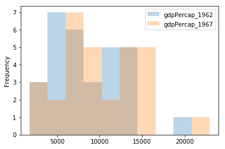
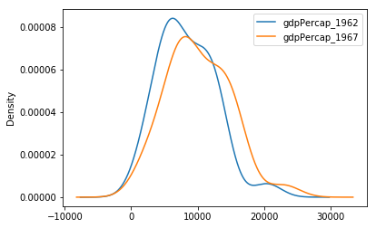
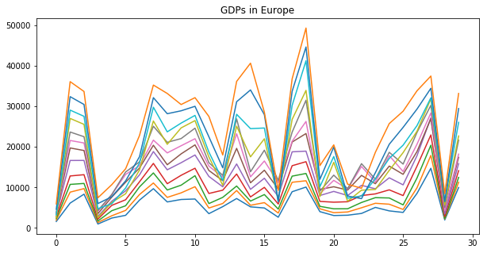

Important Libraries¶
Objectives:
- Use
pandasto load and explore data - Use
matplotlibto plot data - Use help functions and documentation to better understand libraries functions
Pandas¶
Our main use of Pandas is for its data structure – the DataFrame. You can think of the DataFrame as similar to a spreadsheet program where there are rows and columns of information. Here, we will create and examine the DataFrame in a few ways.
In [1]:
%matplotlib inline
import matplotlib.pyplot as plt
import pandas as pd
In [2]:
#create DataFrame from list
a = [1, 2, 3, 4]
In [3]:
df = pd.DataFrame(a)
In [5]:
df.head(2)
Out[5]:
| 0 | |
|---|---|
| 0 | 1 |
| 1 | 2 |
In [6]:
#create from dictionary
a = {'data': [1, 2, 3, 4]}
In [7]:
a
Out[7]:
{'data': [1, 2, 3, 4]}
In [8]:
a['data']
Out[8]:
[1, 2, 3, 4]
In [9]:
a['data'][0]
Out[9]:
1
In [10]:
df = pd.DataFrame(a)
In [11]:
df
Out[11]:
| data | |
|---|---|
| 0 | 1 |
| 1 | 2 |
| 2 | 3 |
| 3 | 4 |
In [12]:
#from a local file
!ls data/gapminder_data/
gapminder_all.csv gapminder_gdp_asia.csv
gapminder_gdp_africa.csv gapminder_gdp_europe.csv
gapminder_gdp_americas.csv gapminder_gdp_oceania.csv
In [13]:
#from local file
df = pd.read_csv('data/gapminder_data/gapminder_gdp_europe.csv')
In [35]:
#info
df.info()
<class 'pandas.core.frame.DataFrame'>
RangeIndex: 30 entries, 0 to 29
Data columns (total 13 columns):
country 30 non-null object
gdpPercap_1952 30 non-null float64
gdpPercap_1957 30 non-null float64
gdpPercap_1962 30 non-null float64
gdpPercap_1967 30 non-null float64
gdpPercap_1972 30 non-null float64
gdpPercap_1977 30 non-null float64
gdpPercap_1982 30 non-null float64
gdpPercap_1987 30 non-null float64
gdpPercap_1992 30 non-null float64
gdpPercap_1997 30 non-null float64
gdpPercap_2002 30 non-null float64
gdpPercap_2007 30 non-null float64
dtypes: float64(12), object(1)
memory usage: 3.1+ KB
In [36]:
#columns
df.columns
Out[36]:
Index(['country', 'gdpPercap_1952', 'gdpPercap_1957', 'gdpPercap_1962',
'gdpPercap_1967', 'gdpPercap_1972', 'gdpPercap_1977', 'gdpPercap_1982',
'gdpPercap_1987', 'gdpPercap_1992', 'gdpPercap_1997', 'gdpPercap_2002',
'gdpPercap_2007'],
dtype='object')
In [15]:
df.columns[::2]
Out[15]:
Index(['country', 'gdpPercap_1957', 'gdpPercap_1967', 'gdpPercap_1977',
'gdpPercap_1987', 'gdpPercap_1997', 'gdpPercap_2007'],
dtype='object')
In [16]:
#head and tail
df.head(6)
Out[16]:
| country | gdpPercap_1952 | gdpPercap_1957 | gdpPercap_1962 | gdpPercap_1967 | gdpPercap_1972 | gdpPercap_1977 | gdpPercap_1982 | gdpPercap_1987 | gdpPercap_1992 | gdpPercap_1997 | gdpPercap_2002 | gdpPercap_2007 | |
|---|---|---|---|---|---|---|---|---|---|---|---|---|---|
| 0 | Albania | 1601.056136 | 1942.284244 | 2312.888958 | 2760.196931 | 3313.422188 | 3533.003910 | 3630.880722 | 3738.932735 | 2497.437901 | 3193.054604 | 4604.211737 | 5937.029526 |
| 1 | Austria | 6137.076492 | 8842.598030 | 10750.721110 | 12834.602400 | 16661.625600 | 19749.422300 | 21597.083620 | 23687.826070 | 27042.018680 | 29095.920660 | 32417.607690 | 36126.492700 |
| 2 | Belgium | 8343.105127 | 9714.960623 | 10991.206760 | 13149.041190 | 16672.143560 | 19117.974480 | 20979.845890 | 22525.563080 | 25575.570690 | 27561.196630 | 30485.883750 | 33692.605080 |
| 3 | Bosnia and Herzegovina | 973.533195 | 1353.989176 | 1709.683679 | 2172.352423 | 2860.169750 | 3528.481305 | 4126.613157 | 4314.114757 | 2546.781445 | 4766.355904 | 6018.975239 | 7446.298803 |
| 4 | Bulgaria | 2444.286648 | 3008.670727 | 4254.337839 | 5577.002800 | 6597.494398 | 7612.240438 | 8224.191647 | 8239.854824 | 6302.623438 | 5970.388760 | 7696.777725 | 10680.792820 |
| 5 | Croatia | 3119.236520 | 4338.231617 | 5477.890018 | 6960.297861 | 9164.090127 | 11305.385170 | 13221.821840 | 13822.583940 | 8447.794873 | 9875.604515 | 11628.388950 | 14619.222720 |
In [17]:
df.tail(3)
Out[17]:
| country | gdpPercap_1952 | gdpPercap_1957 | gdpPercap_1962 | gdpPercap_1967 | gdpPercap_1972 | gdpPercap_1977 | gdpPercap_1982 | gdpPercap_1987 | gdpPercap_1992 | gdpPercap_1997 | gdpPercap_2002 | gdpPercap_2007 | |
|---|---|---|---|---|---|---|---|---|---|---|---|---|---|
| 27 | Switzerland | 14734.232750 | 17909.489730 | 20431.092700 | 22966.144320 | 27195.11304 | 26982.290520 | 28397.715120 | 30281.704590 | 31871.530300 | 32135.323010 | 34480.957710 | 37506.419070 |
| 28 | Turkey | 1969.100980 | 2218.754257 | 2322.869908 | 2826.356387 | 3450.69638 | 4269.122326 | 4241.356344 | 5089.043686 | 5678.348271 | 6601.429915 | 6508.085718 | 8458.276384 |
| 29 | United Kingdom | 9979.508487 | 11283.177950 | 12477.177070 | 14142.850890 | 15895.11641 | 17428.748460 | 18232.424520 | 21664.787670 | 22705.092540 | 26074.531360 | 29478.999190 | 33203.261280 |
In [39]:
#describe
df.describe()
Out[39]:
| gdpPercap_1952 | gdpPercap_1957 | gdpPercap_1962 | gdpPercap_1967 | gdpPercap_1972 | gdpPercap_1977 | gdpPercap_1982 | gdpPercap_1987 | gdpPercap_1992 | gdpPercap_1997 | gdpPercap_2002 | gdpPercap_2007 | |
|---|---|---|---|---|---|---|---|---|---|---|---|---|
| count | 30.000000 | 30.000000 | 30.000000 | 30.000000 | 30.000000 | 30.000000 | 30.000000 | 30.000000 | 30.000000 | 30.000000 | 30.000000 | 30.000000 |
| mean | 5661.057435 | 6963.012816 | 8365.486814 | 10143.823757 | 12479.575246 | 14283.979110 | 15617.896551 | 17214.310727 | 17061.568084 | 19076.781802 | 21711.732422 | 25054.481636 |
| std | 3114.060493 | 3677.950146 | 4199.193906 | 4724.983889 | 5509.691411 | 5874.464896 | 6453.234827 | 7482.957960 | 9109.804361 | 10065.457716 | 11197.355517 | 11800.339811 |
| min | 973.533195 | 1353.989176 | 1709.683679 | 2172.352423 | 2860.169750 | 3528.481305 | 3630.880722 | 3738.932735 | 2497.437901 | 3193.054604 | 4604.211737 | 5937.029526 |
| 25% | 3241.132406 | 4394.874315 | 5373.536612 | 6657.939047 | 9057.708095 | 10360.030300 | 11449.870115 | 12274.570680 | 8667.113214 | 9946.599306 | 11721.851483 | 14811.898210 |
| 50% | 5142.469716 | 6066.721495 | 7515.733738 | 9366.067033 | 12326.379990 | 14225.754515 | 15322.824720 | 16215.485895 | 17550.155945 | 19596.498550 | 23674.863230 | 28054.065790 |
| 75% | 7236.794919 | 9597.220820 | 10931.085347 | 13277.182057 | 16523.017127 | 19052.412163 | 20901.729730 | 23321.587723 | 25034.243045 | 27189.530312 | 30373.363307 | 33817.962533 |
| max | 14734.232750 | 17909.489730 | 20431.092700 | 22966.144320 | 27195.113040 | 26982.290520 | 28397.715120 | 31540.974800 | 33965.661150 | 41283.164330 | 44683.975250 | 49357.190170 |
In [40]:
#columns
df['gdpPercap_1962'].head()
Out[40]:
0 2312.888958
1 10750.721110
2 10991.206760
3 1709.683679
4 4254.337839
Name: gdpPercap_1962, dtype: float64
In [41]:
#multiple columns
df[['gdpPercap_1962', 'gdpPercap_1967']].mean()
Out[41]:
gdpPercap_1962 8365.486814
gdpPercap_1967 10143.823757
dtype: float64
Plotting from DataFrame¶
We can plot the data in our DataFrame in a similar manner. Maybe we are interested in comparing the distributions of the gdp across the 1960’s. We can do this by creating a histogram of each column. In creating these plots, we will work directly from the DataFrame. In practice, I tend to use what works fastest in generating plots and go back through with either Matplotlib or Seaborn after to clean things up.
In [54]:
df[['gdpPercap_1962', 'gdpPercap_1967']].plot(kind = 'hist', alpha = 0.3)
Out[54]:
<matplotlib.axes._subplots.AxesSubplot at 0x118bd2fd0>

In [55]:
df[['gdpPercap_1962', 'gdpPercap_1967']].plot(kind = 'density')
Out[55]:
<matplotlib.axes._subplots.AxesSubplot at 0x1189d05c0>

In [73]:
df.plot(legend = False, figsize = (10, 5), title = 'GDPs in Europe')
Out[73]:
<matplotlib.axes._subplots.AxesSubplot at 0x1194577f0>

Further Reading¶
pandastutorial: http://pandas.pydata.org/pandas-docs/stable/10min.html#minpandascheatsheet: http://pandas.pydata.org/Pandas_Cheat_Sheet.pdfmatplotlibtutorials: https://matplotlib.org/tutorials/index.html